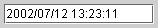
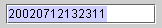
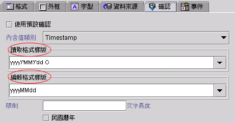

|

Format Pattern 格式樣板
數值、日期時間的原型格式
(original type of numeric and datetime)
格式樣板設定
(format pattern setting)
日期時間格式符號
(datetime format symbol)
數值格式符號 (numeric format symbol)
jLIVE
Builder™ 對於日期時間和數值的處理是採取 MVC (Model、View、Controller)的方式，元件顯示
(view) 的結果是經由格式樣板(format pattern) 格式化 (formatted)
後的樣式，內部資料的模式(model) 是原型格式 (original type)，設計師或使用者對元件內含值的存取控制
(access Control) ，以資料的原型格式 (original type)
傳遞。以數值資料為例，設計師可以設定元件顯示 (view)
的格式樣板含有撇節號和幣別('USD'##,###,###,##0.00)，資料由檔案讀入或設計師給值時，則以不含幣別、撇節號的純數值
(original type)
傳入元件；資料由元件讀出時，不論使用資料於運算公式或存入資料庫，元件亦會自動濾除幣別、撇節號，傳出純數值資料
(original type)。日期時間的格式樣板運作與數值資料是一樣的。jLIVE
Builder™ 格式樣板是以 Java™ 中的 SimpleDateFormat.class 和 DecimalFormat.class
運作，設計師可以參考這兩個 class 的說明。
數值、日期時間的原型格式
(original type of numeric and datetime)
在下列設定中，當以常數給值時，須以原型格式資料。
| 資料型別 |
原型格式 |
資料實例 |
| 數值 (numeric) |
+ - 數字 小數點 |
10、120、99.99 |
| 日期 (Date) |
yyyyMMdd |
"20030501" |
| 時間 (Time) |
HHmmss |
"145058" |
| 日期時間 (Timestamp) |
yyyyMMddHHmmss |
"20030501145058" |
▲Top
格式樣板設定
(format pattern setting)
jLIVE
Builder™ 在元件屬性、資料來源、SQL參數、事件、運算公式、報表元件的設定中，皆含有格式樣板
(format pattern)
的設定或使用，設計師可以選取預設的選項或自行編輯輸入，系統會驗證格式樣板的語法是否正確。格式樣板
(format pattern) 分為數值 (numeric) 與日期時間 (datetime)，設計師以樣板符號
(format symbol) 組成格式樣板 (format pattern)，系統會根據格式樣板，將資料予以格式化
(formatted)。
編輯方塊原件
(Edit component) 具有讀取 (read) 和編輯 (edit)
格式樣板，設計師可以根據需求，讓使用者能瀏覽詳細的資料，而編輯時能簡化輸入。
讀取格式
：yyyy/MM/dd HH:mm:ss

編輯格式
：yyyyMMddHHmmss


▲Top
日期時間格式符號
(datetime format symbol)
| Symbol |
時刻代表意義 |
描述方式 |
範例 ~ 格式 |
範例 ~ 顯示 |
G |
Era designator |
Text |
yyyy'/'MM'/'dd G |
2002/07/12 民國 |
y |
Year 年 |
Year |
yyyyMMdd |
20020712 |
M |
Month in year |
Month |
yyyy-MMM-dd |
2002-七月-12 |
w |
Week in year |
Number |
yyyy'/'MM'/'dd Gw |
2002/07/12 民國28 |
W |
Week in month |
Number |
yyyy'/'MM'/'dd GW |
2002/07/12 民國2 |
D |
Day in year |
Number |
yy'/'MM'/'dd GD |
02/07/12 民國193 |
d |
Day in month |
Number |
yy'/'MMMM'/'dd Gd |
02/七月/12 民國12 |
F |
Day of week in month |
Number |
F MMMM'/'dd'/'yyyy |
2 七月/12/2002 |
E |
Day in week |
Text |
E MMMM'/'dd'/'yyyy |
星期五 七月/12/2002 |
a |
Am/pm marker |
Text |
E MMMM'/'dd'/'yyyy a |
星期五 七月/12/2002 上午 |
H |
Hour in day (0-23) |
Number |
H MMMM'/'dd'/'yyyy a |
12 七月/12/2002 下午 |
k |
Hour in day (1-24) |
Number |
k MMMM'/'dd'/'yyyy a |
12 七月/12/2002 下午 |
K |
Hour in am/pm (0-11) |
Number |
K MMMM'/'dd'/'yyyy a |
0 七月/12/2002 下午 |
h |
Hour in am/pm (1-12) |
Number |
h MMMM'/'dd'/'yyyy a |
12 七月/12/2002 下午 |
m |
Minute in hour |
Number |
yyyy'/'MM'/'dd hh:mm:ss a |
2002/07/12 12:24:20 下午 |
s |
Second in minute |
Number |
yyyy'/'MM'/'dd hh:mm:ss a |
2002/07/12 12:24:20 下午 |
S |
Millisecond |
Number |
|
978 |
z |
Time zone |
General time zone |
yyyy'/'MM'/'dd z |
2002/07/12 CST |
Z |
Time zone |
RFC 822 time zone |
yyyy'/'MM'/'dd Z |
2002/07/12 +0800 |
▲Top
數值格式符號
(numeric format symbol)
| Symbol |
描述方式 |
範例 ~ 格式 |
範例 ~ 顯示 |
0 |
Number |
#,###,###,###,###,##0.00 |
123,456,789.09 |
# |
Number |
#,###,###,###,###,##0.00 |
123,456,789.09 |
. |
Number |
#,###,###,###,###,##0.00 |
123,456,789.09 |
- |
Number |
-#,###,###,###,###,##0.00 |
-123,456,789.09 |
, |
Number |
#,###,###,###,###,##0.00 |
123,456,789.09 |
E |
Number |
0.###E0 |
1.234E3 |
; |
Subpattern boundary |
|
Separates positive and negative subpatterns |
% |
Prefix or suffix |
#,###,###,###,###,##0.00% |
12.00% |
\u2030 |
Prefix or suffix |
|
Multiply by 1000 and show as per mille |
¤ (\u00A4) |
Prefix or suffix |
|
Currency sign, replaced by currency symbol. If doubled,
replaced by international currency symbol. If present in a pattern, the
monetary decimal separator is used instead of the decimal separator. |
' |
Prefix or suffix |
'USD$' #,###,###,###,###,##0.00 |
USD$ 5,040.00 |
▲Top
Copyright © 2001~
2004 Probe Technology . All Rights Reserved.
Questions, comments,
and suggestions to Service@probe.com.tw
|